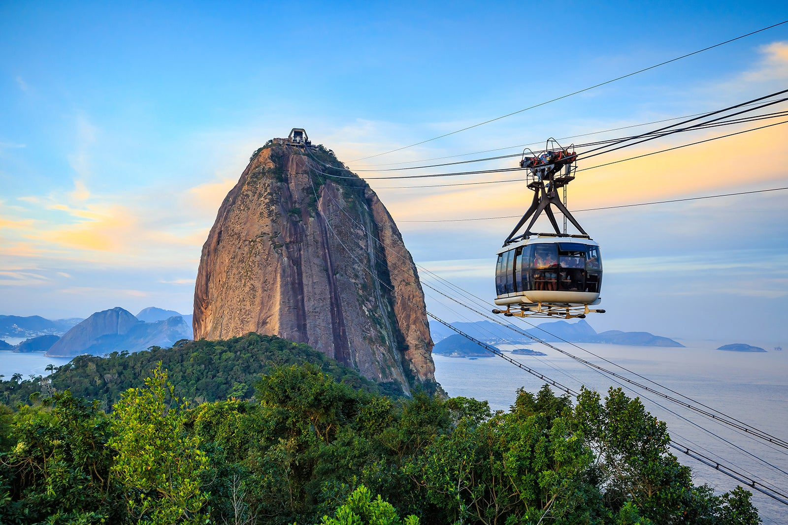
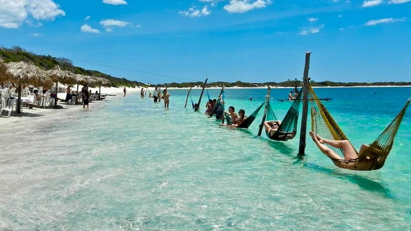

Monte Aconcágua
O Parque Providencial do Aconcágua, na Argentina, abriga não só o ponto mais alto da
Cordilheira dos Andes,
mas também lindos passeios e trilhas, pra quem busca aventuras e belas paisagens. Ideal para quem gosta de
trekking e esportes
radicais como Ski!

Salto do Yucumã
O Salto do Yucumã se destaca ao longo do Rio Uruguai, no limite entre o Brasil e a Argentina.
Localizado dentro
do parque do Turvo, é uma grande pedida para pessoas que apreciam as grandes belezas naturais!
Ponta do Leste
Ponta do leste é uma bela cidade situada no sudeste do Uruguai. Ideal para quem gosta de
praias, surf e belas paisagens.
A cidade também oferece muitas atrações, nas quais se destacam as estruturas e esculturas históricas.

Cataratas do Iguaçu
Cataratas do iguaçu é uma das maraiores maravilhas no mundo. Região que é dona do maior
conjunto de quedas d'água do mundo,
proporciona experiências inesqueciveis! Ideal para quem gosta de sentir a natureza!

Ciudad del Este
Ciudad del Este é uma cidade localizada no Paraguai. Famosa por seus centros comerciais e
cassinos.
Na cidade está localizado o Museu da Terra Guarani e o Zoológico Itaipu que são dois lugares sensacionais para
conhecer mais sobre a
história, fauna e flora da américa latina!
Pantanal
Na maior planície inundável do planeta, cenário de uma incrível biodiversidade, o Pantanal é a
combinação harmoniosa entre água, fauna, flora e gente.
Paraíso dos aventureiros, o Pantanal te proporciona todas as experiências possiveis com atividades
relacionadas a pesca turistica, observação de fauna e flora e belas viagens
entre os rios da região!
Parque Nacional Madidi
Para os amantes da natureza, o Parque Nacional Madidi é um dos pontos de parada
indispensáveis. Uma das maiores áreas protegidas
do mundo te oferece grandes experiências com paisagens e passeios ricos em biodiversidade!

Deserto do Atacama
O Deserto do Atacama é um dos destinos mais procurados do mundo. A região proporciona uma bela
diversidade
de atrações e cenários que irão marcar sua vida! Com uma natureza exuberante a flora e as lagunas vão te
prender de emoção.
Mas a maior atração são as noites do deserto, o céu mais estrelado do mundo te espera!
Floresta Amazônica
A floresta amazônica é detentora da maior biodiversidade do mundo. A fauna amazônica é uma das
atrações mais procuradas
no mundo por turistas! Ideal para quem deseja sentir realmente o ambiente selvagem!
Parque Nacional Natural Tayrona
O Parque Nacional Tayrona é um dos pontos turísticos mais procurados na Colômbia. uma com rica
vegetação e paisagens. As praias de areia branca e águas cristalinas estão cercadas por manguezais, arbustos,
florestas e muito verde.
Ideal para quem busca relaxar contemplando a natureza!

Cayambe
Vulcão Cayambe no Equador é verdadeiramente uma visão magnífica. Uma experiência ideal para
aventureiros mais
exigentes! A trilha e escalada ao topo do Cayambe irá te levar ao ápice de emoções e paisagens desafiadoras!

Porto de Galinhas
Porto de Galinhas, localizado no Brasil, é um dos pontos indispensáveis para quem procura
tranquilidade.
Explore as piscinas naturais que se formam no recife, dê comida para os peixes que nadam a sua volta, vá de
buggy até a romântica Praia Muro Alto.
Ou esqueça tudo isso e durma em uma rede ouvindo e vendo de perto o Atlântico morno, verde e transparente.
Manati Park
Localizado em Bávaro, o Manati Park é um interessante parque temático sobre a natureza da
região.
Esta espécie de eco-parque possui um programa paisagístico repleto de orquídeas e plantas nativas. Ideal para
quem ama a fauna!
As interações com os animais no parque te esperam!

El Nispero Zoo
Zoológico localizado no Panamá é um dos pontos turísticos relevantes para quem quer conhecer a
biodiversidade da
américa latina. O zoológico conta com mais de 90 espécies de animais e uma grande variedade de plantas nativas
e exóticas!

Fernando de Noronha
Fernando de Noronha é um arquipélago vulcânico localizado no nordeste do Brasil. É reconhecida
pelas suas praias pouco urbanizadas e por atividades como mergulho e snorkeling.
As tartarugas marinhas, as raias, os golfinhos e os tubarões dos recifes nadam e te esperam nas águas quentes
e cristalinas.
Toro Verde
Toro Verde é o maior parque de aventuras do Caribe e das Américas! Você que está procurando
por adrenalina em atividades
radicais Toro Verde é o destino perfeito! Você vai se encantar ao andar em tirolesas que atravessam os céus!
Salto Ángel
Salto Ángel, localizado na Venezuela é a maior cachoeira do mundo. Você ficará deslumbrado com
a beleza que está guardada
nesta região!

Pão de Açúcar
O pão de açucar é um conjunto de morros localizados no Rio de Janeiro. Ideal para quem quer
passar umas férias tranquilas
enquanto observa as praias glamurosas cariocas. Também é ideal para aventureiros em busca de atividades como
voar de parapente e asa-delta.
O bondinho é uma das maiores atrações da região e ele está te esperando!

Vulcão Arenal
O Parque Nacional Vulcão Arenal está localizado na região nordeste da Costa Rica. É detentor
de várias trilhas que
permitem a observação de grande parte da flora e fauna do Parque! Os mirantes da região irão te impressionar!
Apoyo Lagoon Natural Reserve
Apoyo Lagoon Natural Reserve é uma reserva natural localizada na Nicarágua. Você que procura
um lugar calma, bonito e tranquilo
irá se deliciar com toda a disponibilidade do local!
Parque Nacional dos Lençóis Maranhenses
O Parque Nacional dos Lençóis Maranhenses é uma área protegida na costa atlântica norte do
Brasil. Paisagens desérticas, dunas, areia branca
e lagoas sazonais te esperam para ser contempladas!

Lago Ilopango
Os amantes da pesca e dos esportes aquáticos irão se deliciar com o Lago Ilopango. Um destino
ideal para quem quer
conhecer todo o ecossistema existente em El Salvador!
Cayos Cochinos
Cayos Conchinos é uma reserva marinha protegida localizada em Honduras. Lá exite um dos
maiores recifes corais do mundo!
Aventureiros que buscam mergulhar em águas paradisiacas, explorar uma fauna e flora exuberante e relaxar em
passeios de barco irão amar este lugar!
Lago de Furnas
O Lago de furnas, localizado no Capitólio - MG é cercado por uma linda paisagem formado por
cachoeiras.
Mirantes, passeios de barco, mergulhos e muita diversão te espera!
Semuc Champey
O monumento natural de Semuc Champey na Guatemala é uma formação rochosa que cobre o leito do
Rio Cahabón de uma beleza indescritível.
A aventura neste parque pode ser feita sozinho, pois toda área é bem localizada! Mirantes e piscinas naturais
te esperam neste lugar mágico!
Parque Eco-arqueológico Xcaret
O Xcaret Park é um parque Eco-arqueológico temático, localizado no México. Vestígios Maias,
selva, rios subterrâneos
são as atrações que fazem esse lugar ser uma aventura incrível!

Porto Seguro
Porto Seguro é uma cidade do litoral da Bahia. Praias tranquilas, parques ecológicos, reservas
ambientais e até mesmo observação
de baleias te esperam neste paraíso!

Floresta Nacional de El Yunque
Localizada em Porto Rico, a Floresta Nacional de El Yunque é uma atração tropical que
concentra diversas montanhas, trilhas
de diversos grau de dificuldade, mirantes, cachoeiras e rios. Uma passadinha para explorar esse lugar será uma
experiência magnifíca!

Gruta da Lagoa Azul
A Gruta do Lago Azul está localizada a área rural de Bonito - MS. A Gruta do Lago Azul é uma
das atrações mais belas, pois
a contemplação das formações geológicas e das águas azuis serão inesqueciveis.
Pic la Selle
Pic la Selle, localizado no Haiti, é o ponto mais alto das cordilheiras Chaîne de la Selle.
Trilhas e mirantes te esperam nessa jornada de belos horizontes!
Rocklands Bird Sanctuary
Rocklands Bird Sanctuary é a casa de algumas espécies raras da Jamaica. É o ponto turístico
muito procurado
por amantes da natureza e de passáros. Perto da Montego Bay, te proporciona um combo de tranquilidade para
descanço e de apreciação intensa da natureza!
❮
❯